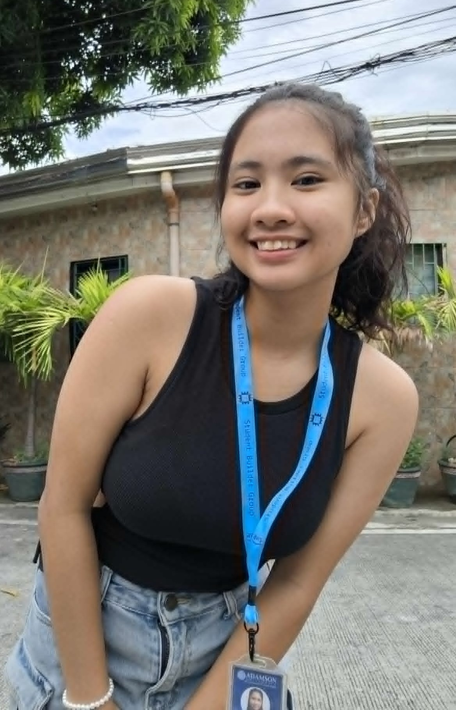

i was a biology kid first.
growing up in Romblon, i liked biology, environmental science and the humanities. i joined biology competitions.
i was also the kid who spent way too long on why the printer stopped working.
a UAAP dancer with a GitHub
also a CS student, a DOST scholar, a dean's lister, an automation builder, a cloud club president, an AWS Solutions Architect, a freelance web dev, a manga reader, and a cat app maker.

i was a biology kid who found code in an Arduino class. now i build web apps and the automations behind them.
growing up in Romblon, i liked biology, environmental science and the humanities. i joined biology competitions.
i was also the kid who spent way too long on why the printer stopped working.
i competed in head dancing for the UAAP.
looking back, all of it shaped how i work now.


CS
Computer science
Adamson University
SEI
DOST scholar
and a dean's lister
it was a robotics and IoT project. i thought it was so cool that people could build things like that.
an Arduino class gave me my first real taste. now i study computer science at Adamson.
i joined the AWS Student Builder Group to learn and meet other builders. Kate Callao recruited me and helped me grow into leading it. now i'm the president.
what i changed:
it's a 120+ member community now.


i was executive secretary of AWS Student User Groups Philippines, from October 2025 to June 2026.
that meant 40+ chapters, a lot of meeting minutes, and keeping everyone in the same loop.
so i started building automations in n8n.

as an IT intern at Tutorials Dojo, i wrote a published article on Amazon Bedrock's LLM-as-a-Judge.
i had to run the evaluations, not just write about them.
i was an AI solutions development intern. what i built:
the intern cohort used the advisor every day.


i built a shared record of Adamson's campus cats. students log where they saw a cat and get a guardian card.
it launched on October 28, 2026. it runs on free tiers only.
right now i'm in my 3rd year of CS, running the cloud club, and taking freelance builds.
want the longer version?